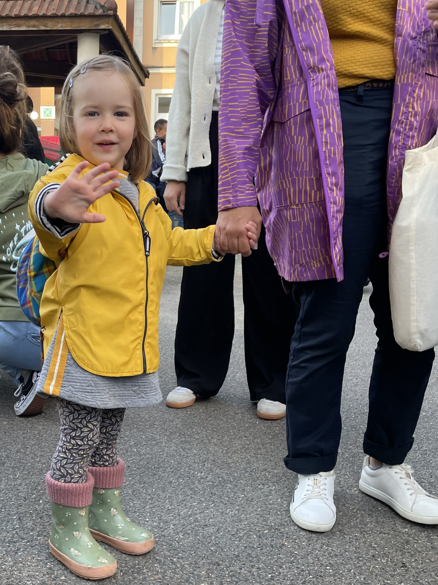
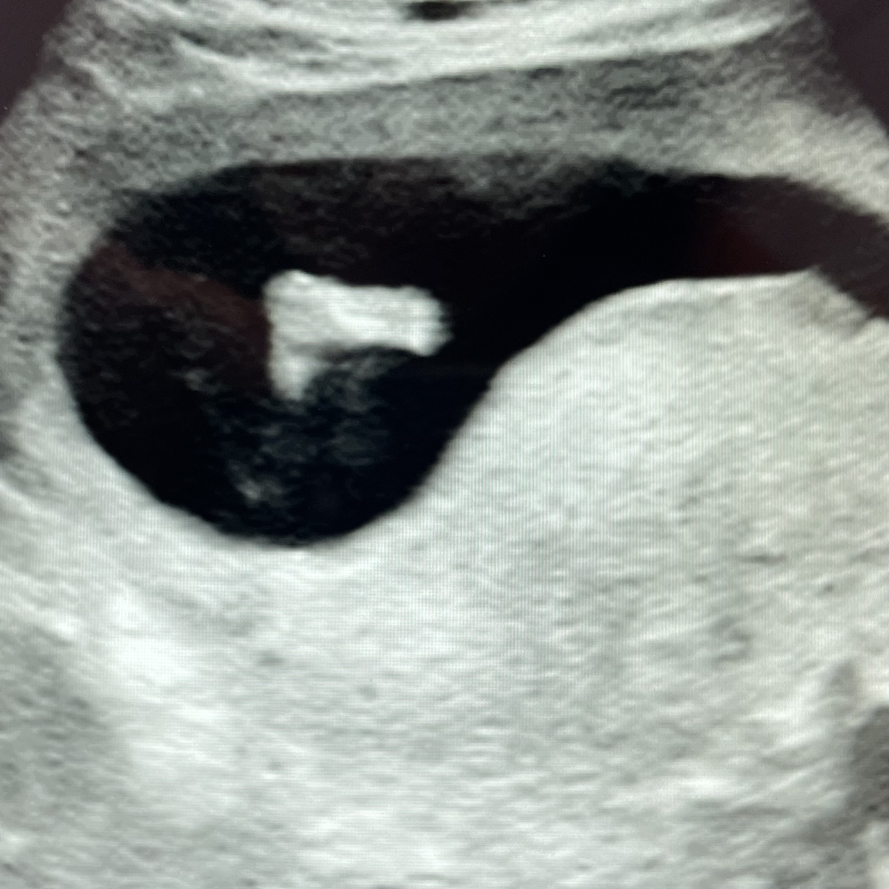

<div class="prairie-root">
	<section class="prairie-progress" aria-labelledby="prairie-heading">
		<h2 id="prairie-heading" class="prairie-sr-only">Progression du trajet Prairie</h2>

		<div class="prairie-track" id="prairie-track" aria-hidden="false">
			<!-- Ligne pointillée version sci-fi -->
			<div class="prairie-line" aria-hidden="true"></div>

			<!-- Portion déjà parcourue en trait plein -->
			<div class="prairie-line-completed" aria-hidden="true"></div>

			<!-- Extrémités -->
			<div class="prairie-endpoint prairie-endpoint--left" aria-label="Arrivée"></div>
			<div class="prairie-endpoint prairie-endpoint--right" aria-label="Départ"></div>

			<!-- Curseur -->
			<div class="prairie-pointer" id="prairie-pointer" aria-label="Position actuelle sur le trajet"></div>

			<!-- Jalons injectés via JavaScript -->
		</div>

		<div class="prairie-legend">
			<span id="prairie-date-label"></span>
			<span id="prairie-distance-label"></span>
		</div>

		<!-- Connecteurs (courbes) entre jalons et blocs -->
		<svg id="prairie-connectors" class="prairie-connectors" aria-hidden="true" preserveAspectRatio="none"></svg>

		<!-- Bloc des cartes d’étapes -->
		<div class="prairie-milestone-blocks-wrapper">
			<div class="prairie-milestone-blocks" id="prairie-milestone-blocks" aria-label="Étapes du trajet"></div>
		</div>
	</section>

	<!-- Bloc "vieux journal" -->
	<section id="prairie-journal" class="prairie-journal prairie-journal--hidden" aria-live="polite">
		<header class="prairie-journal-header">
			<div>
				<h2 id="prairie-journal-title"></h2>
				<p id="prairie-journal-date" class="prairie-journal-date"></p>
			</div>
			<p class="prairie-journal-kicker">Feuille de route – édition spéciale</p>
			<button type="button" id="prairie-journal-close" class="prairie-journal-close"
				aria-label="Fermer le journal">
				×
			</button>
		</header>

		<div class="prairie-journal-layout">
			<!-- Colonne principale (article sur deux colonnes + extrait) -->
			<div class="prairie-journal-main">
				<div id="prairie-journal-main-article" class="prairie-journal-main-article"></div>
				<div id="prairie-journal-secondary" class="prairie-journal-secondary"></div>
			</div>

			<!-- Colonne édito (1/5 environ) -->
			<aside class="prairie-journal-editorial">
				<h3 class="prairie-journal-editorial-title">Édito</h3>
				<div id="prairie-journal-editorial-content"></div>
			</aside>
		</div>
	</section>
</div>

<style>
	/* === Styles prairie === */

	:root {
		/* 0 = départ (cercle rouge à droite), 1 = arrivée (cercle bleu à gauche) */
		--prairie-progress: 0;
	}

	body {
		margin: 0;
		padding: 0;
		background: #000000;
		color: #dddddd;
	}

	/* Masquer le H1 injecté par le layout et l’ancien titre visible */
	main h1,
	.page-title,
	.prairie-title,
	.markdown-body h1 {
		display: none !important;
	}

	.prairie-root {
		min-height: 100vh;
		display: flex;
		flex-direction: column;
	}

	/* Texte uniquement pour lecteurs d’écran */
	.prairie-sr-only {
		position: absolute;
		width: 1px;
		height: 1px;
		padding: 0;
		margin: -1px;
		overflow: hidden;
		clip: rect(0, 0, 0, 0);
		white-space: nowrap;
		border: 0;
	}

	/* Progression sur le tiers supérieur */

	.prairie-progress {
		max-width: 100%;
		width: 100%;
		margin: 6vh auto 4vh;
		padding: 0;
		position: relative;
		/* pour le SVG des connecteurs */
	}

	/* La piste s'étend sur toute la largeur, la trajectoire elle-même fait 80% */

	.prairie-track {
		position: relative;
		width: 100%;
		height: 12vh;
		min-height: 90px;
		z-index: 3;
	}

	/* Ligne pointillée futuriste – affinée pour matcher la barre, pattern 8px x 4px */

	.prairie-line {
		position: absolute;
		top: 50%;
		left: 10%;
		width: 80%;
		height: 4px;
		transform: translateY(-50%);
		background-image:
			radial-gradient(circle,
				rgba(190, 190, 190, 0.9) 0,
				rgba(190, 190, 190, 0.9) 45%,
				transparent 55%);
		background-size: 8px 4px;
		background-repeat: repeat-x;
		opacity: 0.65;
		border-radius: 999px;
		filter: drop-shadow(0 0 6px rgba(200, 200, 200, 0.35));
		z-index: 0;
		pointer-events: none;
	}

	/* Segment complété en trait plein, posé au-dessus de la ligne pointillée */

	.prairie-line-completed {
		position: absolute;
		top: 50%;
		left: 10%;
		width: 80%;
		height: 8px;
		transform: translateY(-50%);
		pointer-events: none;
		z-index: 1;
	}

	.prairie-line-completed::before {
		content: "";
		position: absolute;
		top: 50%;
		right: 0;
		transform: translateY(-50%);
		height: 4px;
		width: calc(var(--prairie-progress) * 100%);
		/* Gris uni, un peu plus discret */
		background: rgba(200, 200, 200, 0.68);
		border-radius: 999px;
		box-shadow:
			0 0 6px rgba(220, 220, 220, 0.6),
			0 0 10px rgba(220, 220, 220, 0.4);
	}

	/* Cercles d'extrémité */

	.prairie-endpoint {
		position: absolute;
		top: 50%;
		transform: translate(-50%, -50%);
		border-radius: 50%;
		z-index: 2;
		/* au-dessus de la barre de progression */
		pointer-events: none;
	}

	/* Bleu / arrivée à gauche */
	.prairie-endpoint--left {
		left: 10%;
		width: 1.5vw;
		height: 1.5vw;
		min-width: 20px;
		min-height: 20px;
		background: #2f8bff;
		box-shadow:
			0 0 10px rgba(80, 170, 255, 0.9),
			0 0 22px rgba(80, 170, 255, 0.6);
	}

	/* Rouge / départ à droite */
	.prairie-endpoint--right {
		left: 90%;
		width: 1vw;
		height: 1vw;
		min-width: 16px;
		min-height: 16px;
		background: #ff7b45;
		box-shadow:
			0 0 10px rgba(255, 136, 76, 0.9),
			0 0 22px rgba(255, 136, 76, 0.6);
	}

	/* Curseur simplifié (couleur unie), pulsations larges et rapides/opaques */

	.prairie-pointer {
		position: absolute;
		top: 50%;
		/* progression de droite (rouge) vers gauche (bleu) */
		left: calc(10% + (1 - var(--prairie-progress)) * 80%);
		width: 1.1vw;
		height: 1.1vw;
		min-width: 18px;
		min-height: 18px;
		border-radius: 50%;
		background: #d8d8d8;
		border: 2px solid #f0f0f0;
		transform: translate(-50%, -50%);
		z-index: 3;
		overflow: visible;
		pointer-events: none;
	}

	.prairie-pointer::before,
	.prairie-pointer::after {
		content: "";
		position: absolute;
		inset: 0;
		border-radius: 50%;
		border: 2px solid rgba(220, 220, 220, 0.7);
		opacity: 0;
	}

	.prairie-pointer::before {
		animation: prairiePulseSlow 2.2s ease-out infinite;
	}

	.prairie-pointer::after {
		animation: prairiePulseFast 1.3s ease-out infinite;
		animation-delay: 0.45s;
	}

	@keyframes prairiePulseSlow {
		0% {
			transform: scale(1);
			opacity: 0.95;
		}

		70% {
			transform: scale(3.4);
			opacity: 0;
		}

		100% {
			opacity: 0;
		}
	}

	@keyframes prairiePulseFast {
		0% {
			transform: scale(1);
			opacity: 0.8;
		}

		60% {
			transform: scale(2.6);
			opacity: 0;
		}

		100% {
			opacity: 0;
		}
	}

	/* Jalons (milestones) – décoratifs, non cliquables */

	.prairie-milestone {
		--prairie-position: 0;
		position: absolute;
		top: 50%;
		/* interpolation droite → gauche (0 = droite / départ, 1 = gauche / arrivée) */
		left: calc(10% + (1 - var(--prairie-position)) * 80%);
		transform: translate(-50%, -50%);
		width: 0.35vw;
		height: 0.35vw;
		min-width: 12px;
		min-height: 12px;
		border-radius: 50%;
		border: none;
		/* pas de bordure, juste la couleur */
		background: #939393;
		cursor: default;
		z-index: 4;
		padding: 0;
		outline: none;
		pointer-events: none;
	}

	/* "Tige" verticale sous le jalon (25px) */

	.prairie-milestone::after {
		content: "";
		position: absolute;
		top: 100%;
		left: 50%;
		width: 1px;
		height: 25px;
		margin-top: 4px;
		transform: translateX(-50%);
		background: #6d6d6d;
	}

	.prairie-milestone--active {
		background: #f9ebcf;
	}

	/* Légende (date + distance) */

	.prairie-legend {
		margin-top: 1rem;
		padding: 0 10%;
		display: flex;
		justify-content: space-between;
		gap: 1rem;
		font-family: system-ui, -apple-system, BlinkMacSystemFont, "Segoe UI", sans-serif;
		font-size: 0.85rem;
		color: #b0b0b0;
		z-index: 3;
		position: relative;
	}

	.prairie-legend span {
		white-space: nowrap;
	}

	/* === Blocs d’étapes + connecteurs === */

	.prairie-connectors {
		position: absolute;
		top: 0;
		left: 0;
		width: 100%;
		height: 100%;
		pointer-events: none;
		overflow: visible;
		z-index: 2;
	}

	.prairie-connectors path {
		stroke: #6d6d6d;
		/* même couleur que la tige des milestones */
		stroke-width: 1px;
		/* même épaisseur visuelle */
		fill: none;
		stroke-linecap: round;
		stroke-linejoin: round;
		filter: drop-shadow(0 0 2px rgba(0, 0, 0, 0.6));
	}

	.prairie-milestone-blocks-wrapper {
		position: relative;
		margin: 2.4rem 10% 0;
		z-index: 3;
	}

	.prairie-milestone-blocks {
		display: grid;
		grid-template-columns: repeat(3, minmax(0, 1fr));
		gap: 1.4rem;
	}

	.prairie-milestone-block {
		background: #101010;
		border: 1px solid #2c2c2c;
		border-radius: 8px;
		padding: 0.75rem 0.9rem;
		text-align: left;
		color: #e0e0e0;
		font-family: system-ui, -apple-system, BlinkMacSystemFont, "Segoe UI", sans-serif;
		font-size: 0.8rem;
		cursor: pointer;
		transition:
			background 0.18s ease-out,
			border-color 0.18s ease-out,
			transform 0.18s ease-out,
			box-shadow 0.18s ease-out;
	}

	.prairie-milestone-block:hover,
	.prairie-milestone-block:focus-visible {
		background: #181818;
		border-color: #bbbbbb;
		box-shadow: 0 0 12px rgba(255, 255, 255, 0.12);
		transform: translateY(-1px);
	}

	.prairie-milestone-block--active {
		background: #202020;
		border-color: #f9ebcf;
		box-shadow: 0 0 14px rgba(249, 235, 207, 0.3);
	}

	.prairie-milestone-block-date {
		display: block;
		font-size: 0.72rem;
		letter-spacing: 0.16em;
		text-transform: uppercase;
		color: #a8a8a8;
		margin-bottom: 0.25rem;
	}

	.prairie-milestone-block-title {
		display: block;
		font-size: 0.84rem;
		font-weight: 500;
		color: #f0f0f0;
	}

	/* Journal style vieux papier, légèrement éclairci */

	.prairie-journal {
		max-width: 960px;
		margin: 4vh auto 10vh;
		padding: 2.5rem 2.25rem 2.75rem;
		background: #f8f0de;
		border-radius: 4px;
		box-shadow:
			0 18px 32px rgba(0, 0, 0, 0.5),
			0 0 0 1px rgba(104, 86, 54, 0.4);
		font-family: "Georgia", "Times New Roman", serif;
		color: #30251a;
		position: relative;
	}

	.prairie-journal--hidden {
		display: none;
	}

	.prairie-journal-header {
		display: flex;
		justify-content: space-between;
		align-items: flex-end;
		border-bottom: 1px solid #d1c3a7;
		padding-bottom: 0.75rem;
		margin-bottom: 1.5rem;
	}

	/* Bouton de fermeture (croix) – légèrement agrandi, collé en haut à droite du journal */

	.prairie-journal-close {
		position: absolute;
		top: 0.6rem;
		right: 0.6rem;
		background: transparent;
		border: none;
		font-size: 1.3rem;
		line-height: 1;
		cursor: pointer;
		color: #7c6a4d;
		padding: 0.1rem 0.3rem;
	}

	.prairie-journal-close:hover,
	.prairie-journal-close:focus-visible {
		color: #3b2c1c;
	}

	.prairie-journal-header h2 {
		margin: 0;
		font-size: 1.6rem;
		letter-spacing: 0.08em;
		text-transform: uppercase;
	}

	.prairie-journal-date {
		margin: 0.25rem 0 0;
		font-size: 0.85rem;
		letter-spacing: 0.18em;
		text-transform: uppercase;
		color: #7c6a4d;
	}

	.prairie-journal-kicker {
		margin: 0;
		font-size: 0.8rem;
		letter-spacing: 0.2em;
		text-transform: uppercase;
		color: #8a7451;
	}

	.prairie-journal-layout {
		display: grid;
		grid-template-columns: minmax(0, 4fr) minmax(0, 1fr);
		column-gap: 2.25rem;
	}

	/* Article principal sur deux colonnes */

	.prairie-journal-main-article {
		font-size: 0.96rem;
		line-height: 1.7;
		column-count: 2;
		column-gap: 2rem;
		text-align: justify;
	}

	.prairie-journal-main-article p {
		margin: 0 0 0.9rem;
	}

	/* Titres internes des articles */

	.prairie-article-main-title,
	.prairie-article-secondary-title {
		font-family: "Georgia", "Times New Roman", serif;
		letter-spacing: 0.16em;
		text-transform: uppercase;
		font-size: 0.98rem;
		margin: 0 0 0.5rem;
		color: #4c3b28;
		column-span: all;
	}

	/* Extrait d’article secondaire (coupé) */

	.prairie-journal-secondary {
		margin-top: 1.6rem;
		padding-top: 0.75rem;
		border-top: 1px solid #d1c3a7;


		font-size: 0.9rem;
		line-height: 1.6;
		text-align: justify;
		position: relative;
	}

	.prairie-journal-secondary p {
		margin: 0 0 0.7rem;
	}

	.prairie-journal-secondary::after {
		content: "…";
		position: absolute;
		right: 0;
		bottom: -0.4rem;
		font-weight: bold;
		font-size: 1.1rem;
	}

	/* Colonne édito ~1/5 */

	.prairie-journal-editorial {
		border-left: 1px solid #d1c3a7;
		padding-left: 1.4rem;
		font-size: 0.88rem;
		line-height: 1.6;
	}

	.prairie-journal-editorial-title {
		margin: 0 0 0.6rem;
		font-size: 0.9rem;
		letter-spacing: 0.18em;
		text-transform: uppercase;
		color: #7c6a4d;
	}

	.prairie-journal-editorial p {
		margin: 0 0 0.8rem;
	}

	/* Adaptation responsive */

	@media (max-width: 900px) {
		.prairie-milestone-blocks {
			grid-template-columns: 1fr;
		}

		.prairie-journal-layout {
			grid-template-columns: 1fr;
			row-gap: 1.75rem;
		}

		.prairie-journal-editorial {
			border-left: none;
			border-top: 1px solid #d1c3a7;
			padding-left: 0;
			padding-top: 1rem;
		}

		.prairie-journal-main-article {
			column-count: 1;
		}
	}

	@media (max-width: 600px) {
		.prairie-progress {
			margin-top: 5vh;
		}

		.prairie-track {
			min-height: 80px;
		}

		.prairie-legend {
			flex-direction: column;
			align-items: flex-start;
		}
	}
</style>

<script>
	// === Logique Prairie  ===

	(function () {
		// Paramètres géométriques des connecteurs
		const CURVE_RADIUS = 12;      // rayon des quarts de cercle
		const VERTICAL_SHIFT = 5;     // décalage vertical entre lignes (en haut, pour éviter la fusion)
		const HORIZ_SHORTEN = 5;      // "raccourci" horizontal avant descente
		const BUNDLE_SPACING = 5;     // espacement horizontal des rails au centre

		// Dates clés du trajet (en UTC pour éviter les surprises de fuseaux)
		function utcDate(year, month, day) {
			// month = 1–12
			return new Date(Date.UTC(year, month - 1, day));
		}

		const startDate = utcDate(2025, 9, 1);  // 1er septembre 2025
		const endDate = utcDate(2026, 6, 1);    // 1er juin 2026

		// Distance totale représentée par les pointillés
		const totalDistanceKm = 363.83e6;

		// Pour figer la progression à une date donnée :
		const USE_MANUAL_DATE = false;
		const MANUAL_DATE = utcDate(2025, 12, 6); // exemple

		const dateFormatter = new Intl.DateTimeFormat("fr-FR", {
			day: "numeric",
			month: "long",
			year: "numeric"
		});

		const numberFormatterMillions = new Intl.NumberFormat("fr-FR", {
			minimumFractionDigits: 1,
			maximumFractionDigits: 1
		});

		function progressFor(date) {
			const total = endDate.getTime() - startDate.getTime();
			if (total <= 0) return 0;

			let elapsed = date.getTime() - startDate.getTime();
			if (elapsed < 0) elapsed = 0;
			if (elapsed > total) elapsed = total;

			return elapsed / total; // 0 → départ (rouge, droite), 1 → arrivée (bleu, gauche)
		}

		function updateProgressOnce() {
			const now = USE_MANUAL_DATE ? MANUAL_DATE : new Date();
			const progress = progressFor(now);

			document.documentElement.style.setProperty(
				"--prairie-progress",
				progress.toString()
			);

			const dateLabel = document.getElementById("prairie-date-label");
			const distanceLabel = document.getElementById("prairie-distance-label");
			if (!dateLabel || !distanceLabel) return;

			dateLabel.textContent = "Aujourd’hui : " + dateFormatter.format(now);

			const traveledKm = totalDistanceKm * progress;
			const traveledMillions = traveledKm / 1e6;
			const totalMillions = totalDistanceKm / 1e6;

			distanceLabel.textContent =
				numberFormatterMillions.format(traveledMillions) +
				" / " +
				numberFormatterMillions.format(totalMillions) +
				" millions de km";
		}

		// Configuration des jalons/milestones
		const milestoneConfig = [
			{
				id: "ms-2025-09-26",
				date: utcDate(2025, 9, 26),
				label: "26 septembre 2025",
				title: "Gazette interplanétaire",
				main: `
    <h3 class="prairie-article-main-title">Verrières : petite section, grande aventure</h3>

    <p>À Verrières, la journée commence désormais avec un nouveau rituel : mini-sac sur le dos, goûter, et les yeux embrumés qui disent «on peut retourner cinq minutes au lit?». Devant la grille, ça se salue, ça attend les camarades pour rentrer. Et puis, la grande porte s’ouvre : la <em>grande</em> classe, la <em>vraie</em> maîtresse, et tout un monde à apprivoiser.</p>

    
	
    <p>Le plus impressionnant, ce n’est pas la taille des tables (finalement, elles sont pile à la bonne hauteur), mais la mécanique toute neuve des journées : l’accueil, le regroupement, les ateliers, la récré, la cantine, la sieste… et cette étrange licorne qui marque l'avancement de la journée sur la frise chronologique. Les matinées sont cadencées : une chanson, une histoire, une feuille à coller, un dessin, et surtout, beaucoup de chamaillerie pour savoir qui a le droit d'avoir tel ou tel jouet!</p>

    <p>Et au milieu de tout ça, la meilleure surprise : les copains. Certains se suivent depuis déjà un an ou deux, d'autres se découvrent. En cinq minutes, un «&nbsp;club des danseurs&nbsp;» naît officiellement au coin du tapis. Les copinages se (dé)font vite. L’appréhension, elle, existe aussi — surtout au moment du «&nbsp;bisou de départ&nbsp;». Mais elle se dompte, souvent plus vite qu’on ne l’imagine, à coups de quelques câlins, de mots rassurants et de grands gestes de la main.</p>

    <p>À la sortie, les récits sont parfois flous (les repas restent un mystère), mais l’essentiel est là : un nouveau quotidien se met en place. Un quotidien fait de petites règles et de grands apprentissages.</p>
  `,
				secondary: `
    <h4 class="prairie-article-secondary-title">Tech au poignet : l'aventure (presque) augmentée</h4>

    <p>Dans la catégorie «&nbsp;objets qui veulent vous faire bouger&nbsp;», voici les montres connectées nouvelle génération : discrète, solide, et étonnamment têtue. Elles comptent vos pas, suivent votre fréquence cardiaque, observent votre sommeil, estiment votre récupération… et réussissent même à vous glisser, sans complexe, qu’il serait peut-être temps de se lever du canapé.</p>

    <p>Le truc, c’est qu’elles ne se contentent pas du bureau : GPS, boussole, altimètre, itinéraires, sorties longues… Elles aiment les journées qui débordent. Et quand vous oubliez de la recharger, elles font semblant de ne pas vous juger : autonomie confortable, mode économe, et une obsession pour «&nbsp;aller plus loin&nbsp;» — comme si elles vous mettaient au défi de qui tiendra le plus longtemps.</p>
  `,
				editorial: `
    <p><strong>Insolite.</strong> Un astronome amateur affirme avoir repéré fin août à proximité de Mars, un objet non identifié à la silhouette de «&nbsp;crapaud&nbsp;».</p>

    <p>Le plus déroutant n’est pas tant la forme que le mouvement : l’objet semblerait accélérer, puis «&nbsp;bondir&nbsp;» par à-coups, comme s’il refusait obstinément de se comporter comme un simple caillou. D’après l’observateur, sa trajectoire pointerait… vers la Terre. De quoi déclencher une vague de messages surexcités et de spéculations folles.</p>

    <p>Bien sûr, prudence : images compressées, reflets, artefacts, et tout le folklore habituel. Mais avouons-le : pour une fin septembre, on a connu des brèves moins… fécondes pour l'esprit.</p>
  `
			},

			{
				id: "ms-2025-12-01",
				date: utcDate(2025, 12, 1),
				label: "1 décembre 2025",
				title: "Chronique en saison froide",
				main: `
    <h3 class="prairie-article-main-title">Vacances : ces familles qui choisissent le soleil... et le grand bleu.</h3>

    <p>Pendant que certains enfilent parkas et bonnets, d’autres enfilent… les palmes. Depuis quelques années, on voit s'obstiner ceux qui refusent la fin de l'été : direction l’Espagne, avec un programme qui tient en deux mots — <em>plongée</em> et <em>manger</em>. Costa Brava, Baléares, Canaries : on cherche une mer claire, des clubs accueillants, et une météo qui ne demande pas de négocier chaque sortie.</p>

    <figure style="column-span: all; margin: 0.7rem 0 1rem;">
      <div style="height: 180px; border: 1px dashed rgba(76,59,40,0.45); border-radius: 4px; display:flex; align-items:center; justify-content:center;">
        <span style="font-style: italic; color: rgba(76,59,40,0.65);">[Photo à insérer : mer / palmes / bateau de plongée]</span>
      </div>
    </figure>

    <p>Le plan est souvent le même : chargement du matériel (tout de même trop matinal), mise à l’eau en sautant, et une bonne heure de balade sous-marine.</p>

    <p>Ce qui plaît, c’est aussi la facilité : une logistique cadrée et des groupes de bons vivants. Au déjeuner, on remplit les assiettes et on partage ses expériences. Sieste, puis rebelotte l'après-midi. Le soir, on boit, on papotte, bref, on profite.</p>

    <p>Un choix de vacances en famille qui plaira aux sportifs !</p>
  `,
				secondary: `
    <h4 class="prairie-article-secondary-title">Dossier : le GEIPAN confirme un objet «&nbsp;inexpliqué&nbsp;»</h4>

    <p>Deux mois après la première observation signalée fin septembre, le dossier change de statut : le GEIPAN* annonce qu’un objet au comportement atypique a bien été détecté et recoupé par plusieurs sources. Les éléments disponibles convergent : trajectoire cohérente, variations de vitesse, et une signature qui ne colle pas parfaitement aux explications banales (débris, reflet, erreur instrumentale).</p>

	</span>

    <p>Le communiqué reste sobre : «&nbsp;existence confirmée&nbsp;». Mais l’objet est désormais suivi avec un effort renforcé de collecte d’images et de mesures. Ce qui, dans le langage administratif, signifie souvent : <em>on n’a pas la réponse, mais on sait que ce n’est pas rien</em>.</p>

    <p><small><sup>*</sup> GEIPAN : Groupe d’Études et d’Informations sur les Phénomènes Aérospatiaux Non identifiés, cellule du CNES chargée de recueillir, d’analyser et de documenter des témoignages d’observations.</small></p>
  `,
				editorial: `
    <p>On y est : la saison officielle du «&nbsp;on se voit, mais au chaud&nbsp;» a commencé. Le calendrier se remplit de obligations de saison : fondue chez les uns, raclette chez les autres, et ce moment collectif où tout le monde prétend qu’il n’a <em>plus</em> faim (sauf pour le dessert).</p>

    <p>Entre deux invitations, on ressort les guirlandes, on discute emplacement du sapin, et on se retrouve à chercher les idées les plus originales pour le fameux calendrier de l'Avent. Les marchés s’illuminent, les chocolats se multiplient, et le premier vin chaud de l’année produit toujours le même effet : une confiance excessive dans nos capacités à chanter juste.</p>

    <p>En bref : l’hiver arrive, et avec lui cette délicieuse conspiration sociale qui consiste à se réunir autour d’une table pour déclarer, la main sur le cœur, que «&nbsp;cette fois, on fait simple&nbsp;».</p>
  `
			},

			{
				id: "ms-2026-02-11",
				date: utcDate(2026, 2, 11),
				label: "11 février 2026",
				title: "Édition de mi-parcours",
				main: `
    <h3 class="prairie-article-main-title">Est-ce la fin du sommeil sur Terre&nbsp;?</h3>

    <p>C’est la grande nouvelle que tout le monde commente déjà : selon les calculs de l’ESA, confirmés par le CNES et l'ONERA, une forme de vie inconnue est en approche, avec une date d’arrivée estimée au <strong>1er juin 2026</strong>. Le ton des chercheurs se veut rassurant : pas de scénario catastrophe, pas d’alerte panique, pas de «&nbsp;courrez dans tous les sens&nbsp;». Simplement un constat — quelque chose vient vers nous, et vite.</p>

    

    <p>Quel rapport avec le sommeil&nbsp;? Les batteries d'instruments pointés vers ce qu'on appelle maintenant «&nbsp;le crapaud&nbsp;» montrent qu'il n'est, étonnamment, pas «&nbsp;dangereux&nbsp;?&nbsp;», mais «&nbsp;pourrait avoir un impact significatif sur la capacité à dormir&nbsp;» annoncent les chercheurs sans plus d'explications.</p>

    <p>Évidemment, la communauté commence à s’organiser. Tout le monde achète des choses dont personne n’avait besoin hier. Et tout le monde sait, au fond, que la vraie aventure commencera avec les nuits courtes, les yeux cernés, et cette phrase universelle : «&nbsp;Ça croasse… à toi d'y aller.&nbsp;»</p>
  `,
				secondary: `
    <h4 class="prairie-article-secondary-title">Le Crapaud, comment les enfants s’y préparent?</h4>

    <p>Dans la cour, le sujet est devenu étonnamment concret. À la question «&nbsp;et toi, tu feras quoi quand ça arrive&nbsp;?&nbsp;», Éléanore, 3 ans (et demi), répond sans hésiter : <strong>«&nbsp;c'est moi qui commanderai&nbsp;!&nbsp;»</strong> (oui, c’est exactement comme ça qu’elle le dit, avec le sérieux de quelqu’un qui a déjà un plan).</p>

    <p>Son programme est prêt : apprentissage du partage et des limites de territoire, rien ne sera laissé au hasard. Elle a aussi prévu le protocole d’accueil (un dessin avec des paillettes et des auto-collants), et une règle simple : «&nbsp;S’il dort, on parle doucement.&nbsp;» La logistique aussi est prête: c’est biberon pour le nourrir et doudou pour le faire taire. Et c’est peut-être le meilleur plan qu’on ait pour l’instant</p>

    <p>Quand on lui demande si elle est contente, elle fronce les sourcils, réfléchit, puis tranche : «&nbsp;Oui, <em>évidemment</em>…&nbsp;»</p>
  `,
				editorial: `
    <p><strong>Le Chant des Deux Astres</strong></p>

    <p>
      Il dit&nbsp;: «&nbsp;Je trace un cap, droit comme une lame&nbsp;» —<br>
      elle répond&nbsp;: «&nbsp;Je tisse un chemin, souple comme une flamme&nbsp;».<br>
      Lui porte le ciel en chiffres, en cartes, en raisons&nbsp;;<br>
      elle porte le monde en gestes, en chansons.<br><br>

      Mais lorsque les vents se lèvent et que la route s’assombrit,<br>
      Mars apprend la douceur, Vénus apprend l’abri&nbsp;:<br>
      Deux planètes, deux langues, et pourtant une même main<br>
      qui se cherche, se trouve, et recommence demain.<br><br>

      Car nul n’est fait d’un seul astre, ni d’une seule loi&nbsp;:<br>
      dans le cœur des voyageurs, Mars et Vénus parlent d'une même voix,<br>
      et sous les étoiles, au bord du monde, ils jurent encore<br>
      de rire, de comprendre, et de tenir le fort.
    </p>
  `
			}
		];

		// Tri chronologique (du plus ancien au plus récent) pour l’ordre des blocs
		const sortedMilestones = [...milestoneConfig].sort(
			(a, b) => a.date.getTime() - b.date.getTime()
		);

		const orderIndexById = {};
		sortedMilestones.forEach((m, i) => {
			orderIndexById[m.id] = i;
		});

		function createMilestones() {
			const track = document.getElementById("prairie-track");
			if (!track) return;

			milestoneConfig.forEach((ms) => {
				const button = document.createElement("button");
				button.type = "button";
				button.className = "prairie-milestone";
				button.setAttribute("aria-label", ms.label);
				button.title = ms.label;

				const frac = progressFor(ms.date);
				button.style.setProperty("--prairie-position", frac.toString());

				const orderIndex =
					orderIndexById[ms.id] !== undefined ? orderIndexById[ms.id] : 0;
				button.dataset.milestoneId = ms.id;
				button.dataset.orderIndex = String(orderIndex);

				track.appendChild(button);
			});
		}

		function createBlocks() {
			const container = document.getElementById("prairie-milestone-blocks");
			if (!container) return;

			sortedMilestones.forEach((ms) => {
				const block = document.createElement("button");
				block.type = "button";
				block.className = "prairie-milestone-block";
				block.dataset.milestoneId = ms.id;

				block.innerHTML = `
          <span class="prairie-milestone-block-date">${ms.label}</span>
          <span class="prairie-milestone-block-title">${ms.title}</span>
        `;

				block.addEventListener("click", function () {
					selectMilestone(ms.id);
				});

				container.appendChild(block);
			});
		}

		function selectMilestone(id) {
			const data = milestoneConfig.find((m) => m.id === id);
			if (!data) return;

			const journal = document.getElementById("prairie-journal");
			const titleEl = document.getElementById("prairie-journal-title");
			const dateEl = document.getElementById("prairie-journal-date");
			const mainEl = document.getElementById("prairie-journal-main-article");
			const secondaryEl = document.getElementById("prairie-journal-secondary");
			const editorialEl = document.getElementById("prairie-journal-editorial-content");

			if (!journal || !titleEl || !dateEl || !mainEl || !secondaryEl || !editorialEl) {
				return;
			}

			titleEl.textContent = data.title;
			dateEl.textContent = data.label;
			mainEl.innerHTML = data.main;
			secondaryEl.innerHTML = data.secondary;
			editorialEl.innerHTML = data.editorial;

			journal.classList.remove("prairie-journal--hidden");

			const allMilestones = document.querySelectorAll(".prairie-milestone");
			allMilestones.forEach((el) => {
				el.classList.toggle(
					"prairie-milestone--active",
					el.dataset.milestoneId === id
				);
			});

			const allBlocks = document.querySelectorAll(".prairie-milestone-block");
			allBlocks.forEach((el) => {
				el.classList.toggle(
					"prairie-milestone-block--active",
					el.dataset.milestoneId === id
				);
			});
		}

		function closeJournal() {
			const journal = document.getElementById("prairie-journal");
			if (journal) {
				journal.classList.add("prairie-journal--hidden");
			}
			const allMilestones = document.querySelectorAll(".prairie-milestone");
			allMilestones.forEach((el) => {
				el.classList.remove("prairie-milestone--active");
			});
			const allBlocks = document.querySelectorAll(".prairie-milestone-block");
			allBlocks.forEach((el) => {
				el.classList.remove("prairie-milestone-block--active");
			});
		}

		// Connecteurs : quarter-circles (A) + segments droits
		function drawConnectors() {
			const svg = document.getElementById("prairie-connectors");
			const progressEl = document.querySelector(".prairie-progress");
			const legendEl = document.querySelector(".prairie-legend");
			if (!svg || !progressEl || !legendEl) return;

			const rect = progressEl.getBoundingClientRect();
			const legendRect = legendEl.getBoundingClientRect();

			svg.setAttribute("width", rect.width);
			svg.setAttribute("height", rect.height);

			while (svg.firstChild) {
				svg.removeChild(svg.firstChild);
			}

			const centerX = rect.width / 2;
			const count = sortedMilestones.length;
			if (count === 0) return;
			const centerIndex = (count - 1) / 2;

			const legendBottomLocal = legendRect.bottom - rect.top;

			sortedMilestones.forEach(function (ms, idx) {
				const milestoneEl = document.querySelector(
					'.prairie-milestone[data-milestone-id="' + ms.id + '"]'
				);
				const blockEl = document.querySelector(
					'.prairie-milestone-block[data-milestone-id="' + ms.id + '"]'
				);

				if (!milestoneEl || !blockEl) return;

				const mRect = milestoneEl.getBoundingClientRect();
				const bRect = blockEl.getBoundingClientRect();

				const orderIndex =
					orderIndexById[ms.id] !== undefined ? orderIndexById[ms.id] : idx;

				// Décalage vertical supplémentaire (vers le haut)
				let extraStart = 0;
				if (orderIndex === 1) extraStart = 5;   // milieu
				if (orderIndex === 2) extraStart = 10;  // gauche

				const stemBottomY = mRect.bottom - rect.top;
				const P0x = mRect.left + mRect.width / 2 - rect.left;
				const baseP0y =
					stemBottomY + 4 + 25 + orderIndex * VERTICAL_SHIFT;
				let P0y = baseP0y - extraStart;

				// ⬇️ NEW: for link 1 (orderIndex 0), shift everything 5px DOWN
				if (orderIndex === 0) {
					P0y += 5;
				}

				// Colonne centrale pour ce connecteur
				let baseColumnX =
					centerX + (orderIndex - centerIndex) * BUNDLE_SPACING;

				// Pour le lien le plus à droite, on réduit la barre horizontale vers le centre de 15px
				if (orderIndex === 0) {
					const sign = baseColumnX >= P0x ? 1 : -1;
					baseColumnX -= sign * 15;
				}

				// Direction vers le centre (1 = droite, -1 = gauche)
				let dirToCenter = baseColumnX >= P0x ? 1 : -1;

				// ==== 1er quart de cercle : bas de la tige → bas + côté vers le centre ====
				const P1x = P0x + dirToCenter * CURVE_RADIUS;
				const P1y = P0y + CURVE_RADIUS;

				// Barre horizontale vers la colonne centrale, légèrement raccourcie
				const pullback = HORIZ_SHORTEN * orderIndex;
				const columnX = baseColumnX - dirToCenter * pullback;

				const dirHoriz = columnX >= P1x ? 1 : -1;
				const P2x = columnX - dirHoriz * CURVE_RADIUS;
				const P2y = P1y;

				// ==== 2e quart de cercle : barre horizontale → rail vertical (sous la légende) ====
				const P3x = columnX;
				const P3y = P2y + CURVE_RADIUS;

				const blockCenterX = bRect.left + bRect.width / 2 - rect.left;
				const blockTopLocal = bRect.top - rect.top;

				// Cas spécial : lien du milieu (orderIndex === 1)
				if (orderIndex === 1) {
					const P4x = columnX;
					const P4y = blockTopLocal; // directement jusqu’au bloc

					const baseSweep1 = dirToCenter > 0 ? 1 : 0;
					const sweep1 = 1 - baseSweep1; // inversé pour orienter correctement le haut

					const baseSweep2 = dirHoriz > 0 ? 1 : 0;
					const sweep2 = baseSweep2;     // le second quart reste comme avant

					const dMid =
						`M ${P0x} ${P0y} ` +
						// 1er quart de cercle
						`A ${CURVE_RADIUS} ${CURVE_RADIUS} 0 0 ${sweep1} ${P1x} ${P1y} ` +
						// barre horizontale
						`L ${P2x} ${P2y} ` +
						// 2e quart de cercle vers la verticale
						`A ${CURVE_RADIUS} ${CURVE_RADIUS} 0 0 ${sweep2} ${P3x} ${P3y} ` +
						// courbe douce jusqu’au bloc
						`Q ${P4x} ${P3y} ${P4x} ${P4y}`;

					const pathMid = document.createElementNS("http://www.w3.org/2000/svg", "path");
					pathMid.setAttribute("d", dMid);
					svg.appendChild(pathMid);
					return;
				}

				// ==== Autres cas : gauche (orderIndex = 2) et droite (orderIndex = 0) ====

				// Descente verticale au-delà de la légende (rail central)
				const P4Base = Math.max(
					P3y + CURVE_RADIUS,
					legendBottomLocal + 20
				);
				let P4y = P4Base;
				if (orderIndex === 2) {
					// Leftmost: middle vertical bar 5px shorter
					P4y = Math.max(P3y + CURVE_RADIUS, P4Base - 5);
				}
				const P4x = columnX;

				// ==== 3e quart de cercle : rail vertical → côté du bloc ====
				const dirToBlock = blockCenterX >= P4x ? 1 : -1;
				const P5x = P4x + dirToBlock * CURVE_RADIUS;
				const P5y = P4y + CURVE_RADIUS;

				// Dernier segment : horizontal + 4e quart de cercle
				const P6x = blockCenterX - dirToBlock * CURVE_RADIUS;
				const P6y = P5y;

				const P7x = blockCenterX;
				const P7y = blockTopLocal;

				// Sweeps :
				const baseSweep1 = dirToCenter > 0 ? 1 : 0;
				const sweep1 = 1 - baseSweep1; // haut inversé

				const baseSweep2 = dirHoriz > 0 ? 1 : 0;
				const sweep2 = baseSweep2;     // milieu OK

				const baseSweep3 = dirToBlock > 0 ? 1 : 0;
				const sweep3 = 1 - baseSweep3; // 3e quart

				// ⬇️ NEW: flip the last sweep so we get "side then down" instead of "down then side"
				const sweep4 = 1 - sweep3;

				// Début de chemin : pour le lien 1 (orderIndex 0),
				// on ajoute une petite barre verticale de 5px juste sous la barre du jalon.
				let startSegment;
				if (orderIndex === 0) {
					const preY = P0y - 5;
					startSegment =
						`M ${P0x} ${preY} ` +
						`L ${P0x} ${P0y} `;
				} else {
					startSegment = `M ${P0x} ${P0y} `;
				}

				const d =
					startSegment +
					// 1er quart de cercle (vers le centre)
					`A ${CURVE_RADIUS} ${CURVE_RADIUS} 0 0 ${sweep1} ${P1x} ${P1y} ` +
					// barre horizontale vers la colonne centrale
					`L ${P2x} ${P2y} ` +
					// 2e quart de cercle vers le rail vertical
					`A ${CURVE_RADIUS} ${CURVE_RADIUS} 0 0 ${sweep2} ${P3x} ${P3y} ` +
					// descente verticale sous la légende
					`L ${P4x} ${P4y} ` +
					// 3e quart de cercle vers le bloc (approche horizontale)
					`A ${CURVE_RADIUS} ${CURVE_RADIUS} 0 0 ${sweep3} ${P5x} ${P5y} ` +
					// petit segment horizontal avant d’entrer dans le bloc
					`L ${P6x} ${P6y} ` +
					// 4e quart de cercle : entrée douce dans le bloc (side → down)
					`A ${CURVE_RADIUS} ${CURVE_RADIUS} 0 0 ${sweep4} ${P7x} ${P7y}`;

				const path = document.createElementNS("http://www.w3.org/2000/svg", "path");
				path.setAttribute("d", d);
				svg.appendChild(path);
			});
		}

		document.addEventListener("DOMContentLoaded", function () {
			createMilestones();
			createBlocks();
			updateProgressOnce();
			drawConnectors();

			const closeBtn = document.getElementById("prairie-journal-close");
			if (closeBtn) {
				closeBtn.addEventListener("click", closeJournal);
			}

			window.addEventListener("resize", function () {
				drawConnectors();
			});
		});
	})();
</script>